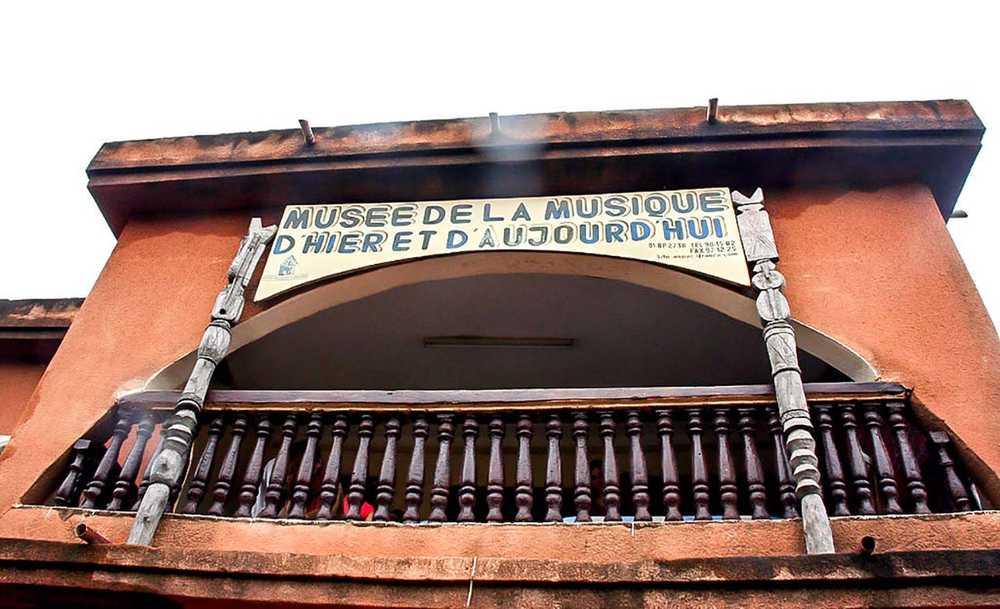

Galerie
Admirez le paysage incroyabble de la ville de Bobo-Dioulasso
Grande Mosquée de Bobo-Dioulasso
Musée Sogossira Sanon
Marché de fruits et légumes

Semaine Nationale de la Culture
Les silures sacrés de Dafra

Mausolée de la princesse Guimbi Ouattara

La marre aux hippopotames de Bala

Le village de Koro

Centre Artistique Taba

Musée de la Musique d'Hier et d'Aujourd'hui

Grand Marché de Bobo-Dioulasso